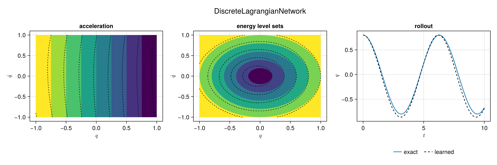

Learning the Harmonic Oscillator
In this tutorial we learn the Lagrangian of the simplest mechanical system there is, the harmonic oscillator, in four ways: from accelerations with two losses, and from positions alone with two more. Because we know the true Lagrangian, we can judge each result. We will see that the right way to judge it is not to compare the learned Lagrangian with the true one.
The tutorial has five parts:
- the system and the data,
- why a Lagrangian is not unique, and what we compare instead,
- two networks trained on accelerations,
- two networks trained on positions only,
- a comparison of the four.
The System
The harmonic oscillator has one position $q$, one velocity $\dot{q}$, and the Lagrangian
\[L(q, \dot{q}) = \frac{1}{2}\left(\dot{q}^2 - q^2\right).\]
Its Euler–Lagrange equation, $\frac{d}{dt}\partial_{\dot{q}}L = \partial_qL$, is $\ddot{q} = -q$, whose solution from $q(0) = q_0$ and $\dot{q}(0) = \dot{q}_0$ is $q(t) = q_0\cos t + \dot{q}_0\sin t$. The energy $E = \dot{q}\,\partial_{\dot{q}}L - L$ is
\[E(q, \dot{q}) = \frac{1}{2}\left(\dot{q}^2 + q^2\right),\]
and it is constant along each trajectory, so the trajectories are the circles $E =$ const in the plane of $(q, \dot{q})$. The package stores a state as the vector $x = [q; \dot{q}]$, the position first:
using LagrangianNeuralNetworks
using GeometricMachineLearning: CPU, Adam, Batch, DataLoader, NeuralNetwork,
TrainingOptimizer, train!
using CairoMakie
import Random
E_true(x) = (x[1]^2 + x[2]^2) / 2 # the true energy of the state x = [q, q̇]
∇E_true(x) = [x[1], x[2]] # its gradient
q_exact(t, q₀, q̇₀) = q₀ * cos(t) + q̇₀ * sin(t)The networks trained on accelerations see 400 states drawn uniformly from the square $[-1, 1]^2$, with the acceleration $\ddot{q} = -q$ at each:
Random.seed!(1234)
X = 2 .* rand(2, 400) .- 1 # 2 × 400, the states [q; q̇]
Q̈ = -X[1:1, :] # 1 × 400, their accelerationsWe judge each network on the $21 \times 21$ grid of the same square, and roll it out from $q_0 = 0.8$, $\dot{q}_0 = 0$ for 100 steps of $\Delta{}t = 0.1$, against the exact solution:
grid = hcat([[q, q̇] for q̇ in -1:0.1:1 for q in -1:0.1:1]...) # 2 × 441
Q̈_grid = -grid[1:1, :]
const Δt = 0.1
N = 100
q₀, q̇₀ = 0.8, 0.0
Q_exact = [q_exact(k * Δt, q₀, q̇₀) for _ in 1:1, k in 0:N] # 1 × (N + 1)A Lagrangian Is Not Unique
Many Lagrangians give the equations of motion $\ddot{q} = -q$. Multiplying $L$ by a scale factor $\rho \neq 0$, adding a constant $c$, or adding a total time derivative $\frac{d}{dt}F(q) = F'(q)\,\dot{q}$ does not change them:
\[\tilde{L} = \rho L + c + \frac{d}{dt}F(q)\]
has the same Euler–Lagrange equations as $L$. In one dimension there is more: Lagrangians that are not of this form, inequivalent ones, give the same equations of motion too; Remark 3.3 of Offen [4], which excludes them, needs at least two dimensions. The data fix the dynamics, not the Lagrangian, and a network trained on the data learns one of these Lagrangians, which one depending on its initial parameters and its training. So we do not compare the learned $L$ with the true one: a poor fit of the one to the other says nothing about the dynamics.
We compare what all of these Lagrangians share instead:
- the acceleration they predict, $\ddot{q}(q, \dot{q})$, on the grid;
- the level sets of the energy: under the gauge above the energy becomes $\rho E - c$, so its values change, but its level sets do not;
- a rollout, the trajectory the learned model integrates from an initial condition.
To draw the level sets of a learned energy beside the true ones, we cannot use the same values. We take the levels through the same points $(q, 0)$ instead, which removes both $\rho$ and $c$:
matched_levels(E, qs) = [E([q, 0.0]) for q in qs]
level_points = 0.2:0.2:1.0
matched_levels(E_true, level_points)5-element Vector{Float64}:
0.020000000000000004
0.08000000000000002
0.18
0.32000000000000006
0.5Each of the four models below gives three functions — its acceleration on a matrix of states, its energy of a state, and its rollout — and one figure with three panels. The filled colours are the truth, and the dashed lines the learned model:
qs = range(-1, 1; length = 41)
states = hcat([[q, q̇] for q̇ in qs for q in qs]...)
acceleration_levels = range(-1, 1; length = 9)
function plot_model(title, acceleration, energy, rollout)
fig = Figure(; size = (1200, 400))
Label(fig[0, 1:3], title; fontsize = 18)
ax = Axis(fig[1, 1]; xlabel = L"q", ylabel = L"\dot{q}", title = "acceleration")
contourf!(ax, qs, qs, [-q for q in qs, q̇ in qs]; levels = acceleration_levels)
contour!(ax, qs, qs, reshape(acceleration(states), length(qs), length(qs));
levels = acceleration_levels, color = :black, linestyle = :dash)
ax = Axis(fig[1, 2]; xlabel = L"q", ylabel = L"\dot{q}", title = "energy level sets")
contourf!(ax, qs, qs, [E_true([q, q̇]) for q in qs, q̇ in qs];
levels = matched_levels(E_true, level_points), extendlow = :auto, extendhigh = :auto)
contour!(ax, qs, qs, [energy([q, q̇]) for q in qs, q̇ in qs];
levels = unique(sort(matched_levels(energy, level_points))),
color = :black, linestyle = :dash)
ax = Axis(fig[1, 3]; xlabel = L"t", ylabel = L"q", title = "rollout")
ts = Δt .* (0:N)
lines!(ax, ts, vec(Q_exact); label = "exact")
lines!(ax, ts, vec(rollout); color = :black, linestyle = :dash, label = "learned")
Legend(fig[2, 3], ax; orientation = :horizontal, framevisible = false)
fig
endAll four networks have two hidden layers of width 4 and are trained in the same way, with Adam for 200 epochs in batches of 20:
function train(arch, loss, input, output)
nn = NeuralNetwork(arch, CPU(), Float64)
dl = DataLoader(input, output; suppress_info = true)
optimizer = TrainingOptimizer(nn.params; algorithm = Adam(), linesearch = 1e-2)
train!(nn, optimizer, dl, Batch(20), 200; loss, show_progress = false)
nn
endA continuous network gives the three functions directly: the package computes its acceleration, its energy as a function of $(q, \dot{q})$, which we wrap as a function of the state, and its rollout with the variational integrator of its midpoint discrete Lagrangian, variational_rollout, from the first two exact positions:
q₁ = q_exact(Δt, q₀, q̇₀)
function continuous_model(nn)
acceleration = LagrangianNeuralNetworks.lagrangian_acceleration(nn.architecture)
E = energy(nn)
(acceleration = x -> acceleration(x, nn.params),
energy = x -> E(x[1:1], x[2:2]),
rollout = variational_rollout(DiscreteLagrangian(nn, Δt), [q₀], [q₁], N))
endTraining on Accelerations
The Lagrangian Neural Network
The loss of Cranmer et al. [1], LNNLoss, solves the Euler–Lagrange equation of the network for the acceleration and compares it with the data:
Random.seed!(1)
arch = LagrangianNeuralNetwork(2; width = 4)
nn_lnn = train(arch, LNNLoss(arch), X, Q̈)
model_lnn = continuous_model(nn_lnn)
plot_model("LNNLoss", model_lnn...)The dashed lines follow the edges of the colours: the network predicts the acceleration, its energy has the circles as level sets, and its rollout follows the exact solution.
The Euler–Lagrange Residual
EulerLagrangeLoss asks the network to satisfy the Euler–Lagrange equation on the data, with no solve [4]. On its own, this loss is minimised by the zero Lagrangian, which satisfies every equation of motion. We therefore fix the gauge: a NormalisedLagrangian has the value 0 and the momentum 0 at the origin for every value of its parameters, which removes the constant and the linear gauge, and a ScaleCondition, added to the loss with RegularisedLoss, asks the velocity Hessian $\partial^2L/\partial\dot{q}^2$ to be 1 there, which removes the scale:
Random.seed!(2)
arch_normalised = NormalisedLagrangian(LagrangianNeuralNetwork(2; width = 4))
loss = RegularisedLoss(EulerLagrangeLoss(arch_normalised), 1 => ScaleCondition(arch_normalised))
nn_el = train(arch_normalised, loss, X, Q̈)
model_el = continuous_model(nn_el)
plot_model("EulerLagrangeLoss", model_el...)Training on Positions Only
Accelerations are rarely measured. A simulation or an experiment gives positions at discrete times. The two networks of this section see only triples of positions $(q_{k-1}, q_k, q_{k+1})$, one timestep $\Delta{}t$ apart, on 400 trajectories $q(t) = a\cos(t + \varphi)$ of random amplitude $a \in [0.2, 1]$ and phase $\varphi$. The input of a sample is the pair $[q_{k-1}; q_k]$ and its output $q_{k+1}$:
Random.seed!(1234)
a = 0.2 .+ 0.8 .* rand(400)
φ = 2π .* rand(400)
positions(k) = reshape(a .* cos.(φ .+ k * Δt), 1, :)
position_pairs = vcat(positions(0), positions(1)) # 2 × 400, [q_{k-1}; q_k]
next_positions = positions(2) # 1 × 400, q_{k+1}The Variational Midpoint Loss
VariationalMidpointLoss trains a continuous network through the discrete Euler–Lagrange equations of its midpoint discrete Lagrangian [5], plus its default regulariser, which penalises a degenerate discrete Lagrangian:
Random.seed!(1)
arch = LagrangianNeuralNetwork(2; width = 4)
nn_vm = train(arch, VariationalMidpointLoss(arch, Δt), position_pairs, next_positions)
model_vm = continuous_model(nn_vm)
plot_model("VariationalMidpointLoss", model_vm...)This training does not learn the oscillator on every draw. Under Random.seed!(3) in place of Random.seed!(1), its acceleration_error is about 1, the error of the prediction $\ddot{q} = 0$, and its rollout leaves the exact solution within the first period: the learned Lagrangian does not give the dynamics of the data.
The Discrete Lagrangian Network
A DiscreteLagrangianNetwork learns the discrete Lagrangian $L_d(q_0, q_1)$ itself [8], trained with DiscreteEulerLagrangeLoss. Its argument is the number of entries of a position, here 1:
Random.seed!(4)
arch_discrete = DiscreteLagrangianNetwork(1; width = 4)
nn_del = train(arch_discrete, DiscreteEulerLagrangeLoss(arch_discrete, Δt), position_pairs,
next_positions)A discrete network has no velocity, so it has no acceleration and no energy of its own. The continuous Lagrangian it stands for is its inverse modified Lagrangian, $L(q, \dot{q}) = L_d(q - \Delta{}t\,\dot{q}/2, q + \Delta{}t\,\dot{q}/2)/\Delta{}t$, which inverse_modified_lagrangian returns as a function. We take its derivatives by central differences, and from them the acceleration $\ddot{q} = (L_q - L_{q\dot{q}}\dot{q})/L_{\dot{q}\dot{q}}$, the energy $E = \dot{q}L_{\dot{q}} - L$ and its gradient $\nabla E = (\dot{q}L_{q\dot{q}} - L_q, \dot{q}L_{\dot{q}\dot{q}})$. The rollout uses the network itself as the discrete Lagrangian:
function discrete_model(nn; h = 1e-4)
Lim = inverse_modified_lagrangian(nn, Δt)
L(q, v) = Lim([q], [v])
L_q(q, v) = (L(q + h, v) - L(q - h, v)) / 2h
L_v(q, v) = (L(q, v + h) - L(q, v - h)) / 2h
L_vv(q, v) = (L(q, v + h) - 2L(q, v) + L(q, v - h)) / h^2
L_qv(q, v) = (L(q + h, v + h) - L(q + h, v - h) - L(q - h, v + h) + L(q - h, v - h)) / 4h^2
q̈(q, v) = (L_q(q, v) - L_qv(q, v) * v) / L_vv(q, v)
(acceleration = x -> [q̈(x[1, b], x[2, b]) for _ in 1:1, b in axes(x, 2)],
energy = x -> x[2] * L_v(x[1], x[2]) - L(x[1], x[2]),
gradient = x -> [x[2] * L_qv(x[1], x[2]) - L_q(x[1], x[2]), x[2] * L_vv(x[1], x[2])],
rollout = variational_rollout(DiscreteLagrangian(nn), [q₀], [q₁], N))
end
model_del = discrete_model(nn_del)
plot_model("DiscreteLagrangianNetwork", model_del.acceleration, model_del.energy, model_del.rollout)
Comparison
We close with three numbers per model, each independent of the gauge of the learned Lagrangian:
acceleration_error, the relative error $\|\ddot{q}_{NN} - \ddot{q}\| / \|\ddot{q}\|$ on the grid [4];energy_alignment, the mean of $|\sin\theta|$ between the gradients of the learned and the true energy on the grid, 0 where the level sets agree [5];trajectory_error, the largest distance between the rollout and the exact solution.
For the continuous networks the package computes all three. For the discrete network we compute the acceleration error from the acceleration above, as the same relative norm, and pass the gradient of its energy to energy_alignment as a function:
continuous_row(name, nn, model) = (model = name,
acceleration_error = acceleration_error(nn, grid, Q̈_grid),
energy_alignment = energy_alignment(energy(nn), ∇E_true, grid),
trajectory_error = trajectory_error(model.rollout, Q_exact))
results = [
continuous_row("LNNLoss", nn_lnn, model_lnn),
continuous_row("EulerLagrangeLoss", nn_el, model_el),
continuous_row("VariationalMidpointLoss", nn_vm, model_vm),
(model = "DiscreteLagrangianNetwork",
acceleration_error = sqrt(sum(abs2, model_del.acceleration(grid) - Q̈_grid) /
sum(abs2, Q̈_grid)),
energy_alignment = energy_alignment(model_del.gradient, ∇E_true, grid),
trajectory_error = trajectory_error(model_del.rollout, Q_exact))
]
println(rpad("model", 28), rpad("acceleration_error", 20), rpad("energy_alignment", 18),
"trajectory_error")
for r in results
println(rpad(r.model, 28), rpad(round(r.acceleration_error; sigdigits = 3), 20),
rpad(round(r.energy_alignment; sigdigits = 3), 18), round(r.trajectory_error; sigdigits = 3))
endmodel acceleration_error energy_alignment trajectory_error
LNNLoss 0.00764 0.00261 0.0172
EulerLagrangeLoss 0.0158 0.00686 0.0152
VariationalMidpointLoss 0.0858 0.0272 0.0168
DiscreteLagrangianNetwork 0.0804 0.0387 0.125The networks trained on accelerations see the quantity the first measure compares, on the same square. The networks trained on positions see the dynamics only through one timestep, and what they learn is the Lagrangian whose discrete flow reproduces the data, which differs from the true one at order $\Delta{}t^2$; modified_lagrangian corrects that offset. None of these numbers needs the learned Lagrangian to equal the true one.